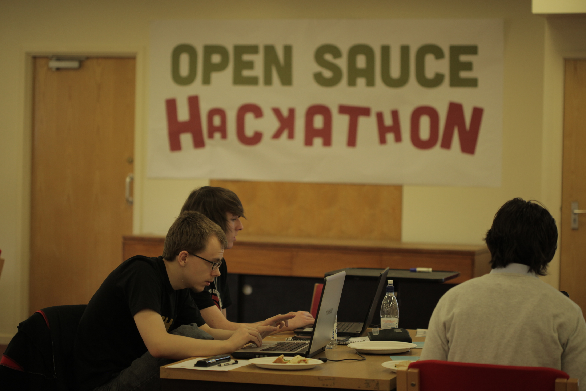
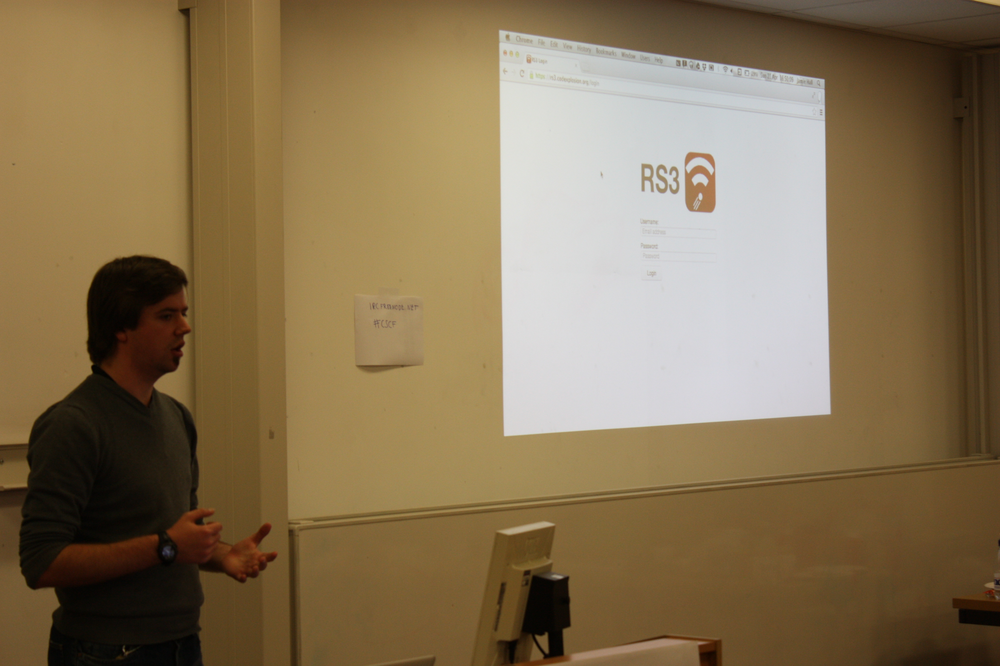
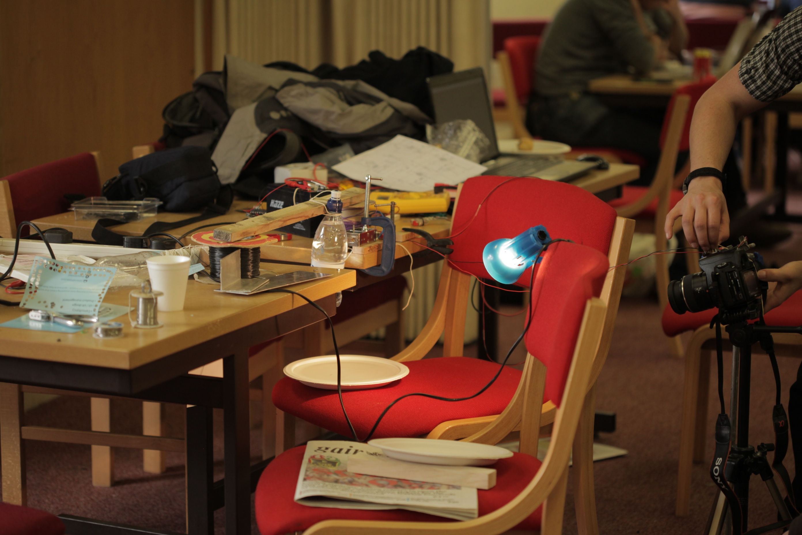
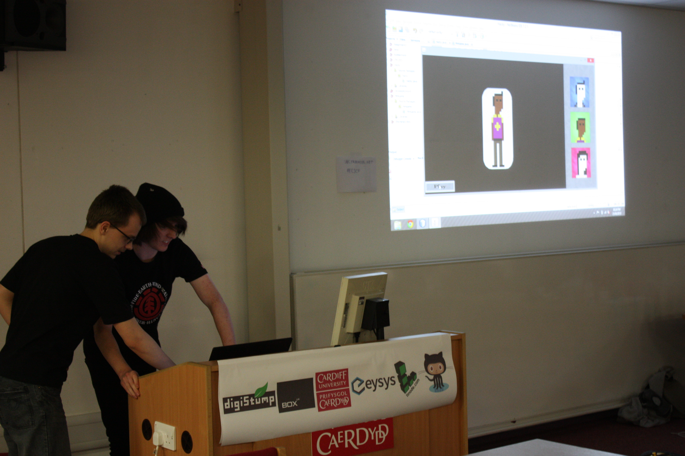

OpenSauce Hackathon 2013
Cardiff Computer Science Community
Project maintained by HenryHoggard and georgesale Hosted on GitHub Pages — Theme by mattgraham
The 2013 OpenSauce Hackathon
(Source files for the projects are incoming in the next few days - please bear with us!) Saturday 20th and Sunday 21st April was the time for our 2nd Annual Open Sauce Hackathon hosted at Cardiff University School of Computer Science and Informatics
Basically, a 'hackathon' is where a large group of people (mainly slightly geeky ones!) convene to design, build, and present a project in a short amount of time. It's not about doing it perfectly, either - more about getting something up and running!
Hackathons are popular, too. Companies such as Facebook, Google, Dropbox, and Twitter host them, too, encouraging innovation outside the regular work day.
So, over two days, our group of caffeine, sandwich, and chocolate fuelled geeks built a plethora of awesome ideas, based on two themes - 'automation' (making a project do something else automatically) and 'open' - making whatever you want.
The projects were:
Individual Hacker Award!
GoNuts (Jamie Hall) - RS3 (Google Reader replacement)
The unfortunate demise of Google Reader has created a void in the world of RSS Readers - one that GoNuts attempted to fill. Jamie created an alternative for the discerning person wanting to keep up with their favourite RSS feeds.GitHub
Automation Award!
EEESoc - Digital Camera Automation
The guys visiting from EEESoc designed a system to detect a falling object (in this case, a water droplet) and take a photo at the right focus with a camera, making for some exciting possibilities for photo projects.
Open Award (First Place)!
Danny Dyer's Chocolate Humunculous (Joseph Redfern, Walter Carvalho, and Charlie Mills) - Kuushi (Home Management System)
This project provided a web service (using Django) for students to effectively manage living in a house together, including support for showing bills, shopping alerts, event notifications, and a system to alert landlords to issues.GitHub
Open Award (Runner Up 1)!
Non-Committal - eartube.es (Movie Reccommendation System)
Non-Committal built a website to suggest movies you might like, based on the similarity of soundtrack and genre between movies.
Open Award (Runner Up 2)!
Keyboard Warriors - Hacky (Game)
The Keyboard Warriors designed a game using Java, with an interactive map, and an awesome character chooser. Considering they were the only first year students at the Hackathon this year, they did their year proud!
Most Marketable Idea (First Place)!
Wolverines - Vinternship (Virtual Internship Website)
Problem: Awesome students without industry experience, and cash-strapped small businesses. Solution: Vinternship. This project was a central website for 'virutal internships' specifically for university students, making it easier and faster to find appropriate internships on the web. This allowed small businesses to get small jobs done for free - in return, providing valuable employer experience for a student's CV.
Most Marketable Idea (Runner Up)!
Martin Chorley - Dionysus (Local Events Map)
Martin likes beer and music, but often can't decide where to go some evenings for these things. So, he designed a system to combine events from different sources (Foursquare, Facebook, and LastFM) and display these on a map, making for a centrally-located record of what's happening near you!GitHub
Dionysys Website
Coggard (James Cohen & Henry Hoggard)- Chocolate Sundae (Photo Portfolio)
Henry and James' project utilised photos from a person's Flickr (with a future objective of using Instagram too), turning them into an impressive online photo portfolio for that person.Matt Williams and Kirill Sidorov - Tracking System for Flying Drone
Some of the organisers of this event (hence not competing) decided to experiment with a flying drone, programming it in MatLab. This enabled the drone to 'track' and follow around a target (a pink ping-pong bat), held by a person walking around the room (videos below).GitHub
Lazy Automators - Library Book Renewal System
Sick and tired of unfair 'stealth' library charges for late books (with no notifications!), Jake designed and built a system to automatically renew university library books, and email the user when this had been done, reminding them to return the book if they no longer need it.Flax Capacitor (Adam Flax & Umair Khan)- PasteBin Alternative
Flax Capacitor implemented a PasteBin alternative, enabling users to paste in code whilst keeping the formatting, and share with others. A particuarly awesome feature of this project was the ability for the website to unpack .zip files and display them in a list, then repack when needed for download.GitHub
John - Mesh Data Structure for Java
John designed a mesh data structure for Java, used for things such as storing objects. Stemmed from a personal need in a current project, John managed to hack together a complex system in two short days to benefit him considerably in the long run.
A massive thankyou to the sponsors of this event:
Cardiff University School of Computer Science and Informatics, Box UK, Digistump, linode, eysys, and GitHub.
Thanks to George Sale for the write up. You can find more of his work on his blog.
Media
Websites
Blog Post by Martin ChorleyEvent Website
cfhack Twitter page
EventBrite Signup Page (Archived)
Photos
 GoNuts (Jamie Hall) presenting RS3 EEESoc Digital Camera Automation project in action
 Team DDCH presents Kuushi
Team DDCH presents Kuushi eartub.es
eartub.es Keyboard Warriors with their game, Hacky
 The Wolverines working on Vinternships
The Wolverines working on Vinternships Martin Chorley's Dionysus
Martin Chorley's Dionysus